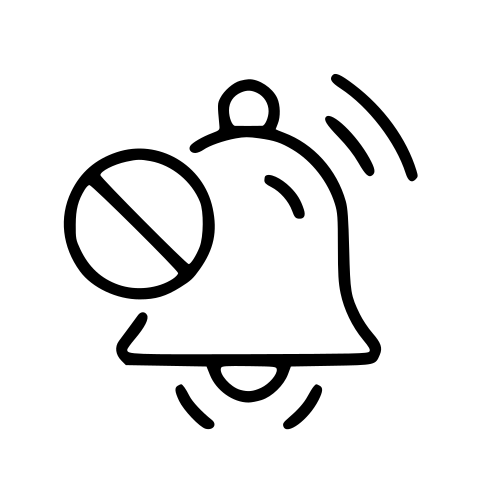
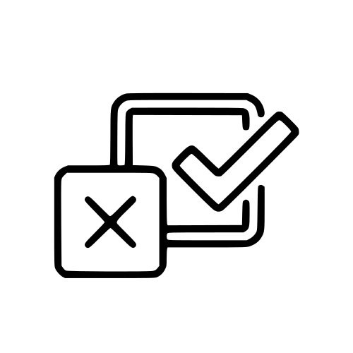

CloseDose helps families make confident, safe dosing decisions.
We created CloseDose to demystify pediatric medication dosing with tools that feel trustworthy, accessible, and easy to use — no matter the hour or the device.
Why CloseDose exists
Parents and caregivers told us that dosing over-the-counter medicines often feels overwhelming. Between varying bottle concentrations, fast-changing guidance, and countless online charts, it can be hard to know what information to trust.
CloseDose combines clinical expertise with thoughtful design so caregivers can quickly calculate accurate, age-appropriate doses — and understand the reasoning behind each recommendation.
CloseDose at a glance
Every tool is built to remove guesswork for families and clinicians alike.
- Only the age and weight you already know are needed to calculate the right dose.
- Fast results with simple inputs so you can help a sick child without delay.
-

No account or subscription — open CloseDose the moment you need it. - Designed for accessibility with high-contrast colors and multilingual support.
- Color-coded care warnings update instantly based on your answers.
- Individualized dosing recommendations — no ranges to interpret or math to redo.
- Available on phones, tablets, and desktops wherever families are caring.
-

Intuitive layout and plain language make it easy for anyone to use. - Accurate, evidence-based guidance that reflects the latest pediatric recommendations.
- Created and continually reviewed by an actively practicing pediatric emergency physician.
What guides our work
- Safety first. Every update is reviewed by pediatric physicians who actively care for children.
- Clarity matters. We explain dosing in plain language, with visuals that support calm decisions in stressful moments.
- Access for all. CloseDose remains free thanks to community support, and we continue investing in multilingual resources.
Community supported
CloseDose stays free for families because of generous donors and partners who believe safe dosing guidance should never sit behind a paywall. Every contribution keeps the calculator up to date and accessible.
How we maintain trust
CloseDose follows strict safeguards before we share guidance with families.
- Medication data is sourced from trusted pediatric references and double-checked against current manufacturer labeling.
- Review dates are displayed across the site so you always know when information was last validated.
- We actively collect feedback from clinicians, pharmacists, and caregivers to keep improving the experience.
Medication Safety & Usage
Tap to read important safety information
This tool does not provide medical advice. The dosing information is for educational purposes and should be verified with a healthcare provider.
- Always use the dosing device (syringe or cup) that came with the medication.
- Confirm your child's weight if it has been more than 3 months.
- Contact Poison Control (1-800-222-1222) if an overdose is suspected.